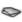
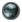
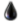
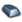
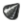
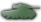

Template:Icon
From Hearts of Iron 4 Wiki
Contents
Overview
Should be the go-to for inline text-sized icons on this wiki.
Parameters
{{{Icon|icon name|text}}}
| Parameter | Info | Required | Notes | Examples |
|---|---|---|---|---|
| 1 | icon name | Required | The concept you want an icon for | infantry, heavy tank
|
| 2 | text | Optional | Text linked to be displayed alongside the icon. Leave it blank if you don't want any text. Write 1 if you want the default text that goes with the icon |
1, Paradox
|
Usage Examples
{{Icon|infantry}} to create:

{{Icon|lighttank|1}} to create:
{{Icon|super heavy tank|bananas}} to create:
Index
The following icons are implemented to the system. Feel free to add more in the source!
Resources
| Icon | Object | Code |
|---|---|---|
|  | Aluminum | {{Icon|aluminum}}
|
|  | Chromium | {{Icon|chromium}}
|
|  | Oil | {{Icon|oil}}
|
| Rubber | {{Icon|rubber}}
| |
|  | Steel | {{Icon|steel}}
|
|  | Tungsten | {{Icon|tungsten}}
|
Units
| Icon | Object | Code |
|---|---|---|
| Cavalry | {{Icon|cavalry}}
| |
| |
Infantry | {{Icon|infantry}}
|
| |
Light Tank | {{Icon|lighttank}}
|
| |
Medium Tank | {{Icon|mediumtank}}
|
|  | Heavy Tank | {{Icon|heavytank}}
|
| Super Heavy Tank | {{Icon|superheavytank}}
| |
| Modern Tank | {{Icon|moderntank}}
| |
| |
Mechanized | {{Icon|mechanized}}
|
| Motorized | {{Icon|motorized}}
| |
| Marine | {{Icon|marine}}
| |
| Paratroop | {{Icon|paratroop}}
| |
| Mountain | {{Icon|mountain}}
| |
| |
Anti-air | {{Icon|antiair}}
|
| |
Anti-tank | {{Icon|antitank}}
|
| |
Artillery | {{Icon|artillery}}
|
| |
Recon | {{Icon|recon}}
|
| |
Engineers | {{Icon|engineers}}
|
Industry
| Icon | Object | Code |
|---|---|---|
| MIC, military factory | {{Icon|military factory}}
| |
| CIC, civilian factory | {{Icon|civilian factory}}
| |
| NIC, naval factory, naval dockyard | {{Icon|naval dockyard}}
|
Ideology
| Icon | Object | Code |
|---|---|---|
| Democracy | {{Icon|democracy}}
|